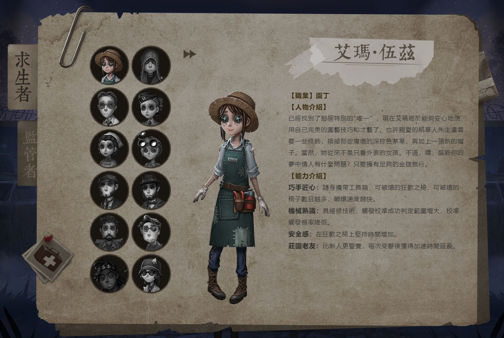
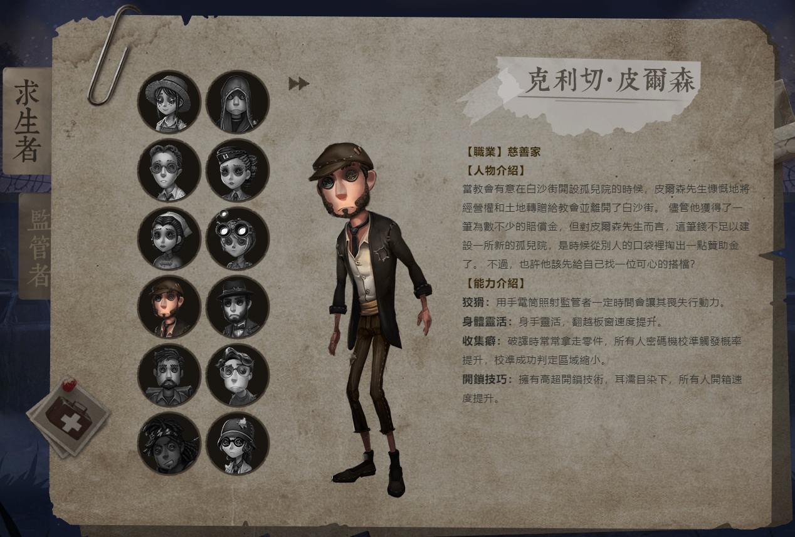
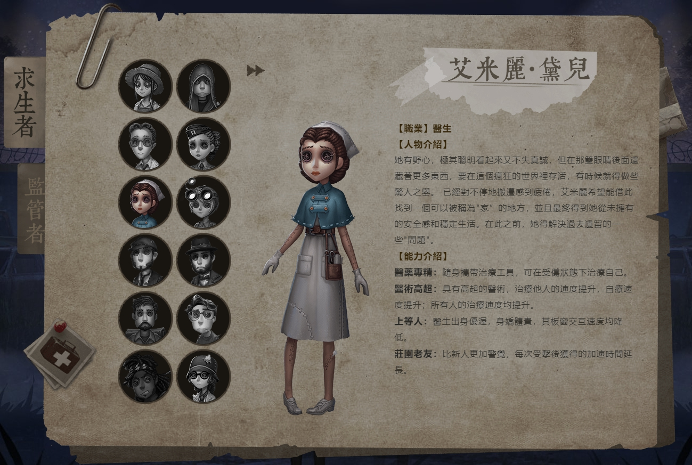
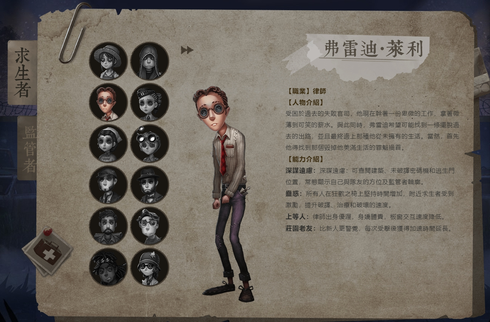
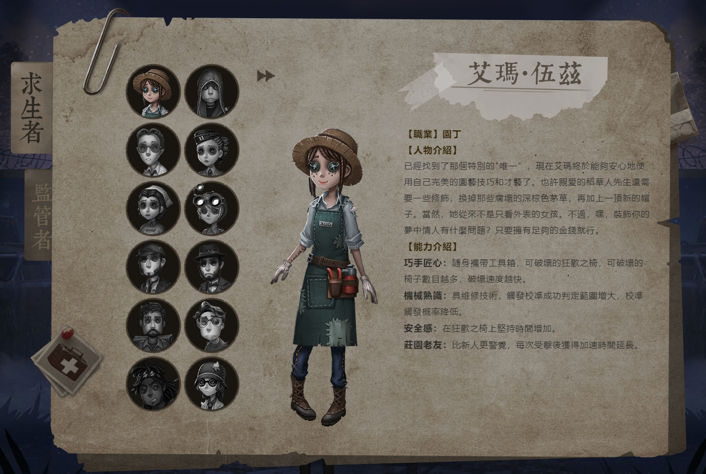
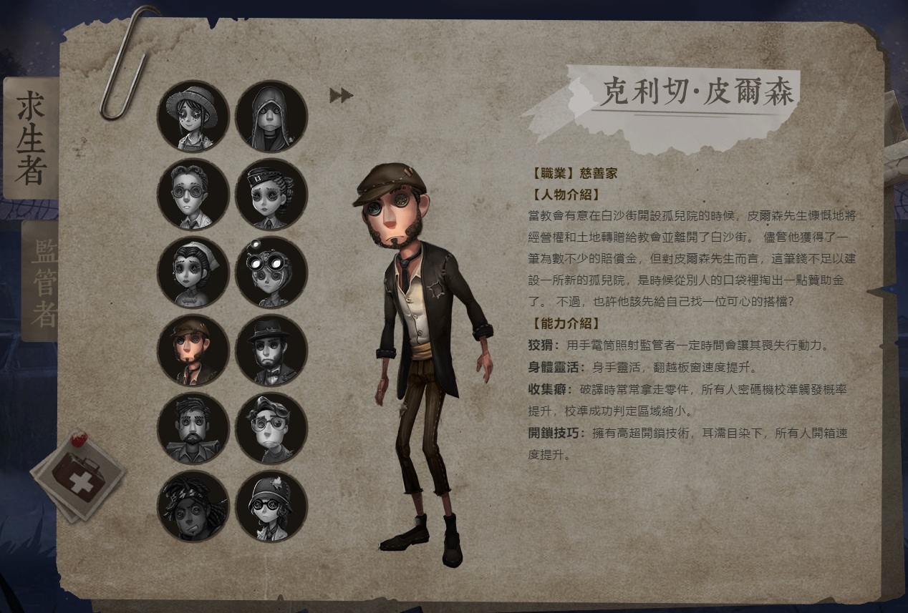
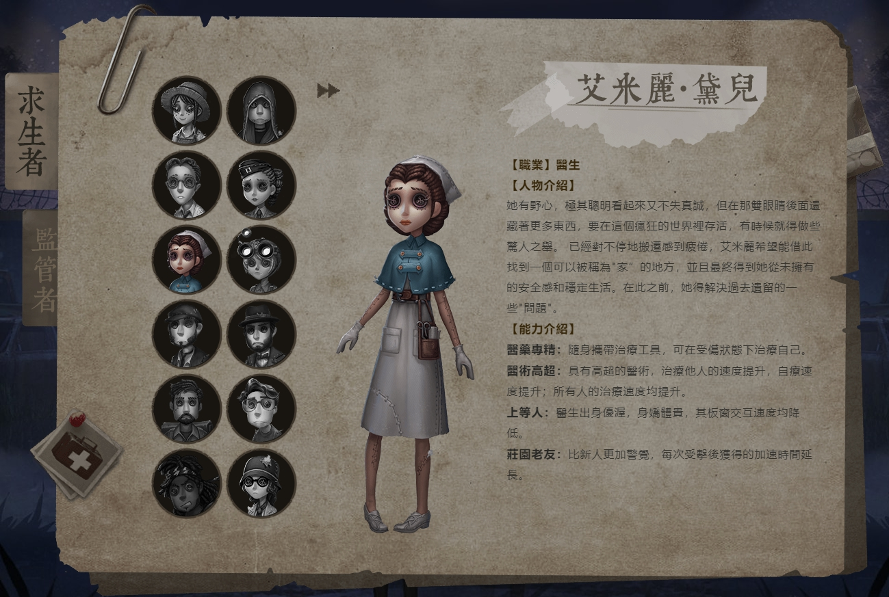
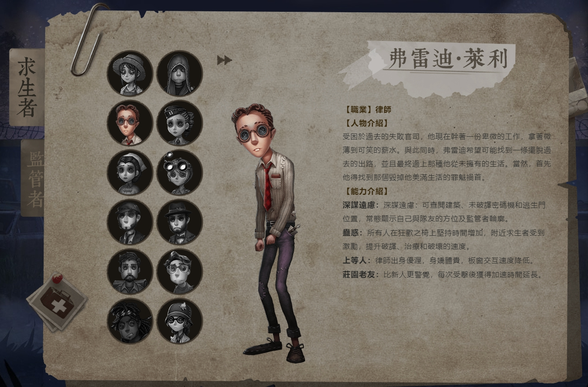

求生者
園丁
 俗稱拆椅大隊的一員 是此遊戲的主角之一 為廠長的女兒 在遊戲中會增加校準範圍 但其實除此之外沒有太特別之處
慈善家
 適合溜鬼的角色 翻箱速度提升 停電的時候可以開著手電筒亂跑
醫生
 受傷能夠自癒 治療速度提升 缺點是翻窗速度減慢 另外 有很多漂亮的時裝都是醫生的~
律師
 適合剛開始玩這個遊戲的人 出場就自備地圖 可以慢慢認場景 但隨著等級越來越高就沒什麼人要玩這個角色了
 俗稱拆椅大隊的一員 是此遊戲的主角之一 為廠長的女兒 在遊戲中會增加校準範圍 但其實除此之外沒有太特別之處
 適合溜鬼的角色 翻箱速度提升 停電的時候可以開著手電筒亂跑
 受傷能夠自癒 治療速度提升 缺點是翻窗速度減慢 另外 有很多漂亮的時裝都是醫生的~
 適合剛開始玩這個遊戲的人 出場就自備地圖 可以慢慢認場景 但隨著等級越來越高就沒什麼人要玩這個角色了